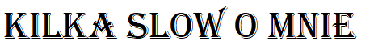

 Cześć, mam na imię Mateusz, jestem 23-letnim studentem informatyki. Jednakże od kilku lat moją glowna pasją są rośliny miesożerne. Wbrew pozorom moim zdaniem poprawnie użylem tu nazwe "mięsożerne", a nie owadożerne, ponieważ niektore odmiany dzbanecznika w naturalnym środowisku nie żywią się tylko owadami czy stawonogami, a rownież malymi plazami oraz ssakami jak chociażby myszy. Swoją wiedze w tej waskiej dziedzinie staram sie czerpac z rzetelnych zrodel. Wybralem się kilka razy an targi owadożerow. A ostatnio nawet zglosil się do mnie redaktor radia Olsztyn w celu zrealizowania audycji miedzy innymi o tych wyjątkowych roślinach. W swojej kolekcji posiadam kilkaset, a może nawet kilka tysięcy roznych roslin, w tym kilkadziesiąt roznych gatunkow. Glownym obiektem fascynacji u mnie w tych roslinkach jest ich sposob pozywiania oraz "interaktywnosc" - rozumiem przez to ich reakcje np. na dotyk. Rozne gatunki reagują inaczej, jedne wabią ofiare slodkim nektarem, następnie zwabiony owad zasaiada na lepkim liściu i już nie może sie wydostać. Innym przykladem są gatunki posiadające pulapki lowne aktywne lub pasywne: te pierwsze wykorzystuja (w przypadku mucholowki amerykanskiej dwie blaszki polaczone u nasady, z wloskami czuciowymi w srodku i zebami na zewnatrz) pulapki jednoczesnie do wabienia, unieruchomiana ofiary poprzez blyskawiczne zakleszczenie blaszek jak i trawienia, natomiast drugie - pasywne mają pulapki w ksztacie kielicha lub dzbanka wypelnionego sokami trawiennymi ktore bardzo dobrze wabia i trawia wieksze osobniki. Natomiast aspekt "interaktywnosci" w wielu przypadkach jest wspaniala forma zabawy. Poruszenie wloskow czuciowych mucholowki objawia sie jej natychmiastowa reakcja - zlapanie palca ;) Niestety nalezy pamietac, ze kazda pulapka ma swoj okres eksploatacji zwykle wynoszacy od 1 do 4-5 zamkniec i otwarc. Rosiczki z rodziny przylądkowych obraly z kolei zupelnie inną taktykę. Zwabiony, przyklejony owad, ktory sie mota na lisciu wkrotce zostanie unieruchomiony jeszcze bardziej. Rosiczki gdy wykryja przez dluzsza chwile ruch zaczynaja produkowac soki trawienne (zazwyczaj kwas mrowkowy) do liscia oraz owijac sie wokol ofiary. Warto wspomniec tu o "Stylidium Debile" zwana rośliną katapultą, ktora nie nalezy do żadnej rodziny owadożerow. Jest bardzo rzadką rośliną, ktora znajduje sie w mojej kolekcji tylko z jednego wzgledu - zabija owady. A dlaczego sie nie zalicza ? Odpowiedz jest troche wstrząsająca. Stylidium Debile zabija dla przyjemnosci, nie pozera swoich ofiar. W momencie gdy wykryje owad blisko swoich kwiatow - rozpoczyna ostrzal z pręcikow.